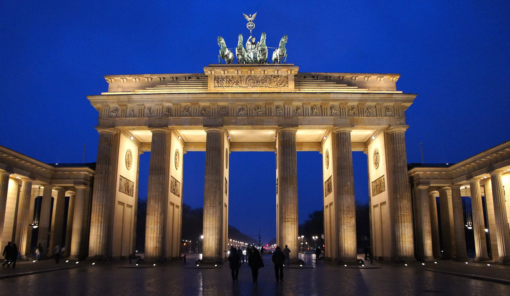
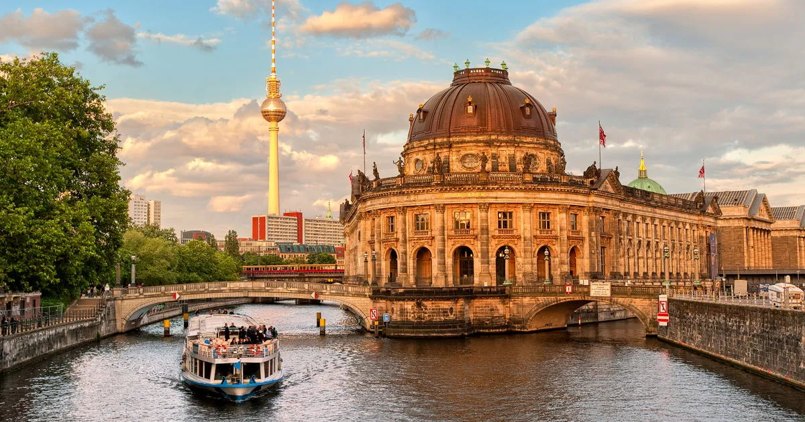

Les Lieux Incontournables à Berlin

Porte de Brandebourg
Un symbole emblématique de Berlin, la Porte de Brandebourg est un monument historique majeur qui représente l'unité de l'Allemagne.

Île aux Musées
Un complexe de musées classé au patrimoine mondial de l'UNESCO, abritant des collections de renommée mondiale, y compris le célèbre buste de Nefertiti.

Mémorial du Mur de Berlin
Un site historique où vous pouvez explorer des vestiges du Mur de Berlin, symbole de la guerre froide et de la division de la ville.